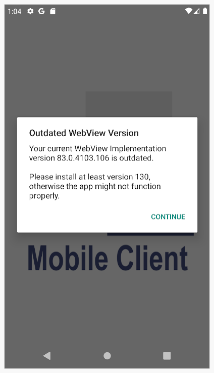
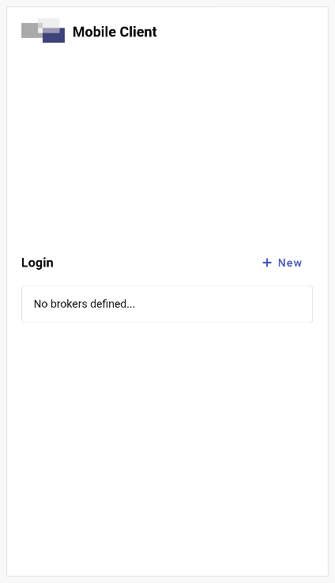
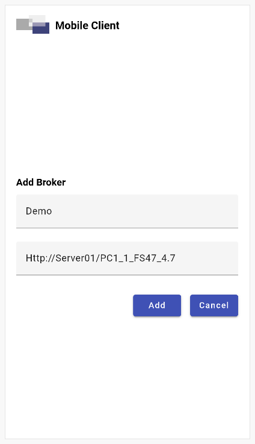
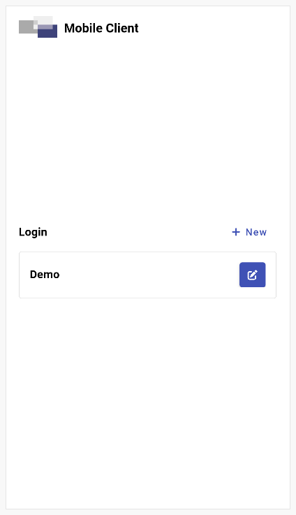
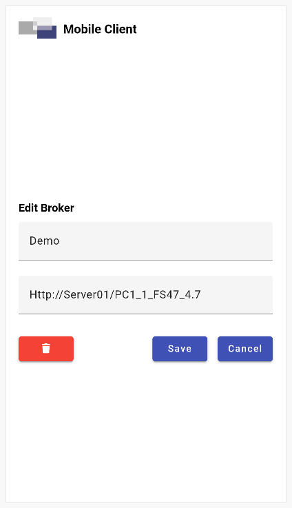

Android App
Für die volle Integration des HTML-Clients in die mobile Welt, stellen wir im Google Play Store den Client als Android App zur Verfügung. Die App basiert auf demselben Sourcecode wie die Browser-Version. Einzelne Features greifen im Gegensatz zu einem Browser aber direkt auf die Hardware des mobilen Geräts zu und integrieren sich dadurch besser in die App.
Name der App
Framework Studio Mobile Client
Store Link
https://play.google.com/store/apps/details?id=com.fs.htmlclient
Note
Apple verweigert Apps per Richtlinie, dynamische Benutzeroberflächen von einer externen Quelle (Broker) zu laden und am Client aufzubauen. Durch diese Limitierung sind wir leider nicht in der Lage, den Framework Studio Mobile Client auf IOS bereitzustellen.
APK für direkte Installation
Für Geräte, die keinen Zugriff auf den Play Store haben, bieten wir die Mobile Client App auch direkt als APK an. Unter folgendem Link stehen alle APK's der einzelnen Releases zum Download bereit:
https://github.com/FrameworkSystemsGmbH/HtmlClient/releases
Systemvoraussetzungen
Unterstützt werden Handys und Tablets mit Android 8.0 oder höher.
Der Framework Studio Mobile Client ist eine App basierend auf dem Ionic Capacitor Framework, welches HTML-Applikationen mit Hardware-Unterstützung auf mobile Endgeräte bringt.
Zur Anzeige der HTML-Applikation wird die im System konfigurierte Android System WebView genutzt.
Diese basiert wie Google Chrome auf der Chromium Engine.
Die Android System WebView wird typischerweise über die App-Updates aktualisiert.
Dies ist bei älteren Geräten, bzw. Geräten, die alte Android Versionen nutzen, oft nicht der Fall.
Das kann gegebenenfalls zu Problemen in der Darstellung führen oder ein Starten der App ganz verhindern.
Beim Start der App kommt deshalb eine Meldung, falls eine WebView Version kleiner 130 erkannt wurde. Bei Schließen der Meldung wird der Start der App fortgesetzt. Bei Nutzung einer WebView, die älter als Version 130 ist, können wir allerdings nicht garantieren, dass die App korrekt funktioniert.

Warning
Um die Darstellung und Funktion der App sicherzustellen, verwenden Sie eine Android System WebView Version 130 oder höher.
Note
Von Android 7 bis Android 9 wurde Google Chrome als WebView genutzt, das ist seit Android 10 allerdings nicht mehr der Fall. Dennoch empfehlen wir grundsätzlich auch die aktuellste Version von Google Chrome zu installieren.
WebView Version herausfinden
Es gibt zwei Möglichkeiten herauszufinden, welche Android System WebView Version installiert ist:
- In den Einstellungen unter
AppsoderApps & Benachrichtigungendie Android System WebView auswählen. Hier dann unterErweitertzur Versionsangabe scrollen. Das gibt Ihnen aber nur die installierte Version, was in den meisten Fällen auch die genutzte Version ist. - Um auf Nummer sicher zu gehen, welche Version tatsächlich genutzt wird, müssen Sie in die Entwickleroptionen gehen, allerdings müssen diese erst aktiviert werden.
Hierfür müssen Sie in den Einstellungen meist unter
TelefoninfooderGeräteinfodieSoftwareinformationenöffnen und mind. 10x auf dieBuildnummertippen. Dann navigieren Sie in den Einstellungen unterEntwickleroptionenzurWebView-Implementierung. Hier sollte die aktuell ausgewählte WebView inkl. Version angegeben sein.
Note
Da jede Android Version ein leicht anderes Design und Handling für die Einstellungen hat, ist es möglich, dass die Anleitung für Sie nicht zu 100% zutrifft. Im Zweifel können Sie googlen, wie das für Ihre Android Version gemacht wird.
WebView Version aktualisieren
Sollten Sie eine veraltete WebView Version haben, gibt es mehrere Möglichkeiten:
- Versuchen sie über den PlayStore alle App-Updates herunterzuladen.
- Sollte das die WebView nicht aktualisiert haben, kann es sein, dass Sie eine alte Android Version nutzen, die nicht mehr mit Updates versorgt wird.
In diesem Fall können Sie sich die
Android System WebView Betaüber den PlayStore herunterladen. Sie können sie dann in den Entwickleroptionen, wie in Punkt 2 oben, auswählen.
Note
Die Android System WebView Beta ist ab Android 10 verfügbar.
Einrichten eines Brokers
Es muss natürlich definiert werden, mit welchem Broker sich der Mobile Client verbinden soll. Nach dem Start der App wird der Login angezeigt. Über den Button „+ New“ können beliebig viele Broker zur Liste hinzugefügt werden.
 
Nachdem ein Broker hinzugefügt wurde, kann sich mit ihm verbunden werden. Über den Stift-Button kann ein bestehender Broker bearbeitet oder gelöscht werden.
 
Es ist auch möglich, Urls von Development Brokern hinzuzufügen. Dabei ist zu beachten, dass der Mobile Client nur auf den Development Broker zugreifen kann, wenn dieser über das Netzwerk erreichbar ist. Dazu muss Framework Studio mit Administrator-Rechten ausgeführt werden. Ob der Development Broker vom Netzwerk aus zugreifbar ist, kann über das Tray-Icon geprüft werden: